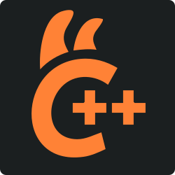
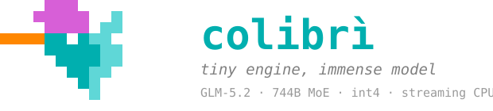
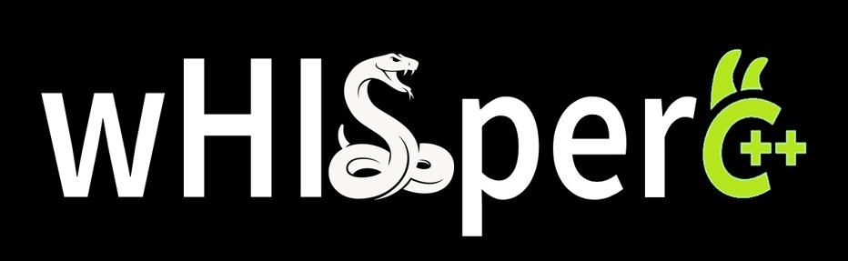

Load a local model
Select GGUF or a Safetensors checkpoint, check the required engine and start its compatible path. Native packs and Prism formats retain their own adapters.
Implementation
Our beta edition: HYDRA One integration, local models and a laboratory for observing and controlling the runtime.
Hydra One grew out of my own needs and the way I work with local AI. Its design choices, integrations and features reflect my priorities: they may resonate with other users, or serve needs different from theirs. I chose to share the project to make that work available, invite constructive discussion and offer a useful starting point for anyone who wants to explore it or adapt it to their own needs.
Select GGUF or a Safetensors checkpoint, check the required engine and start its compatible path. Native packs and Prism formats retain their own adapters.
ImplementationLazy startup makes the interface available before model loading; inspect the workspace and choose when to start inference.
ImplementationChoose HYDRA adapters, the native engine, llama.cpp, Transformers/PEFT, Unsloth, AirLLM, Colibri or a compatible local API according to available dependencies.
ImplementationUse chat, history and the conversation archive, retaining organization metadata in the existing interface rather than another parallel chat.
ImplementationThe server exposes OpenAI- and Anthropic-compatible routes for external clients, with explicit validation of structured output.
ImplementationBrowse categories, authors, versions, variants and files. Inspect model cards, base models and licenses before choosing an installation.
ImplementationLocal inventory scans configured roots and known caches, distinguishes file roles and recognizes split model files.
ImplementationUse byte-level download progress, split-file handling and local imports. Availability, disk space and access terms still apply.
ImplementationThe workspace connects OpenCode, DeepSeek Harness, TrueForge, Hermes and Claude Code through their original paths, with session and candidate management.
ImplementationConnect configured MCP services and shared browser/memory tools. Tool calling remains dependent on the selected model.
ImplementationThe interface library exposes prompts and skills in the workspace. Imported library content is not automatically a new native Hydra component.
ImplementationImport PDFs, DOCX and text through document workflows; use extraction and OCR when the required local runtime and weights are available.
ImplementationOrganize collections, search the library and retain document name, page and position. BM25, semantic and hybrid retrieval have distinct requirements.
ImplementationUse H0/H1/H1v2 paths, local graph, source hashes and context budgets, with admission checks for changed or out-of-scope sources.
ImplementationPrepare datasets and explicit local training settings; validate runner, device, checkpoints and export destinations.
ImplementationSource exposes SFT, DPO, GRPO, KTO, reward and VLM options, with runner/device restrictions rather than interchangeable GPU paths.
ImplementationGGUF conversion is an owned, cancellable job with persisted outcomes and checked destinations.
ImplementationLocal Whisper provides language/decoding controls, segments and subtitles using installed model assets and runtime.
ImplementationUse the selected audio.cpp runtime and supported TTS paths; the lab has a Kokoro adapter separate from chat-model loading.
ImplementationVoiceStudio connects API/MCP, profiles, jobs and rendering, alongside dedicated audio library/editing modules.
ImplementationAudioCraft and generative workers handle registered tasks with compatible models and conditioning, alongside a dedicated audio-separation path.
ImplementationPair a valid GGUF projector or the appropriate Transformers vision path. Backend capabilities determine accepted inputs.
ImplementationDiffusers workers cover explicit Stable Diffusion, SDXL, inpainting and video families, requiring compatible pipelines, weights and resources.
ImplementationConfigure repetitions, warmup, prompt and token budget. Record actual samples, cancel jobs and retain outcomes in the workbench.
ImplementationCompare consistent reports and model identities; separate HTTP, TTFT, decode and prefill. Inspect archives, filters, charts and CSV exports.
ImplementationColibri workspace and HYDRA contracts distinguish choice, yes/no, score and prefix-scoring paths; equivalence requires dedicated verification.
ImplementationInspect all 59 controls, dependencies and parameters, prepare versioned changes and retain missing-hardware/runtime gates.
ImplementationMonitor and records distinguish backend work, host telemetry and historical evidence. Leases, cancellation, shutdown and idle unload manage owned processes.
ImplementationCheck sources/versions, stage isolated candidates, validate dependencies and select or restore supported paths without confusing downloads with activation.
ImplementationBackups verify editable-source hashes. HYDRA recovery restores missing files while retaining modified existing files.
ImplementationController, memory budgets and native adapters keep execution under explicit control.
Chat, models, MCP, benchmarks and monitoring in our local interface.
56 inventoried features with explicit dependencies, provenance and admission gates.

Protocols, baselines, observed samples, model identity, warmup, TTFT and report comparison.
Discovery, authors, model cards, formats, shards, resources and compatible runtime selection.
Inventory, official sources, isolated candidates, verified backups, selection and rollback.
The concrete role of 21 integrated projects, with original marks, sources and attribution.
Engines, agents, tools and workers present in the mod. Each card identifies our integration and the original project authors.

GGUF engine, native libraries, format tooling and optional server transport.
Selected Python environment, inference/QLoRA integration and owned Studio service.

Local Safetensors text/vision runtime and model metadata integration.

Tensor execution, device/runtime integration and training dependencies.
Optional local layer-streaming backend and isolated runtime selection.

Isolated engine launcher, controls, model routing and System One integration.
Bundled planning modules and managed training integration; original Apache notices retained.

Local ASR and translation. Selected distributions also use the credited Unsloth fork.
Selected local speech runtime. Displayed mark identifies Unsloth, not a separate audio.cpp logo.

Local API/MCP integration, jobs, profiles and rendering workflows.
Optional voice-conversion model/runtime path; task-specific asset checks.

Music and audio generation, conditioning and training adapters.

Original document/OCR/retrieval workers reused by our local adapter; no second dashboard claimed.
Original harness transport, workspace/session integration and candidate updates.
Original harness integration and official package/version mapping.
Harness integration with shared browser/memory services and candidate management.
Original agent integration, project services and isolated source candidate workflow.
Native CLI/harness integration and signed official candidate checks; no claim to redistribute its implementation.

Shared MCP browser service and verified candidate activation.
Shared memory-server contract and project-scoped MCP configuration.
Project-scoped routing metadata, runtime contract and MCP integration.
OpenCode, DeepSeek Harness, TrueForge, Hermes Agent and Claude Code component maps; original transport, sessions and update candidates.
Dashboard, Claude and Antigravity workspace kinds; owned native host and local URL validation.
Project MCP configuration, chat tool bridge, shared browser/memory services and controlled candidate activation.
Playwright MCP and MCP memory server integrated through the shared service configuration.
Project-scoped runtime metadata, routing enablement and MCP launch contract.
Document import, local workers for OCR, semantic processing and reranking. Existing module states no separate Open WebUI HTTP server/UI.
HF search, author/model-card metadata, categories, local discovery, split-file identity, imports and byte-level download progress.
LoRA, explicit SFT/DPO/GRPO/KTO/reward/VLM options; CPU TRL, Soup and Unsloth QLoRA runner policies; checkpoint validation.
Owned cancellable GGUF conversion, dataset upload, output validation and checkpoint/resume handling.
GGUF projector pairing, CPU default and capability-checked GPU offload; Transformers vision paths and multimodal capability reporting.
VoiceStudio jobs/profiles/rendering, local speech, audio library/editing and audiobook planning tests.
AudioCraft conditioning and training, local generative audio, source separation and task-specific capability checks.
Explicit local corpus; SQLite memory, H0/H1/H1v2 graph paths, exact frontend/template reuse, source hashes, freshness and context guards.
56 baseline features plus separate GPU controls; dependency resolution, preview/apply/rollback, execution admission and historical evidence.
IOCP source consumer, CPU scheduling, bounded request-local checkpoints, raw scoring, System One bridge contracts and blocked hardware-dependent paths.
Run history, timing, model/runtime identity, live monitoring, source provenance and explicit task-completion contracts.
Owned children, exclusive GPU leases, cancellation, graceful shutdown, idle unloading and Windows Job limits.
Official source checks, candidate staging, source fingerprints, explicit activation/rollback, dependency supervision and source-only recovery capsule.
OpenAI/Anthropic-compatible server routes, structured response validation, request monitoring and model lifecycle routes.
56 baseline features and 3 GPU controls. Open an entry to inspect its implementation and current gate. Hardware dependencies and blocks remain explicit.
V7-A-001Backend CPUCONDITIONALHistorical CPU/Vulkan group reconciled: this control gates CPU; GPU backends have separate quarantined controls.
Admission and runtime prerequisites apply
Control: switch
V7-A-002Offload parziale/completo e deviceGATEDnative runtime logs and buffer allocations; CPU and Vulkan paths
QUARANTINED / Partial/full GPU offload and device selection require the separate GPU recovery gate.
Control: switch
V7-A-003Riuso runtime nel benchmark CPUCONDITIONALQwen CPU normal runner:ON keeps one owned runtime across warmup/samples;OFF closes it after each request and reloads serially. Lock remains held through final cleanup. No resident model across independent admissions.
Admission and runtime prerequisites apply
Control: switch
V7-A-004Capability detection e admissionCONDITIONALtest_hydra_start_admission; test_hydra_benchmark_v4; blocked catalog remains separate
Admission and runtime prerequisites apply
Control: mandatory
V7-A-005Circuit breaker e fallbackCONDITIONALtest_hydra_guard_failures; test_hydra_graph_optional; provider-off real 503
Admission and runtime prerequisites apply
Control: mandatory
V7-B-006Prompt cache nativaCONDITIONAL7 cache-enabled native samples; specialized repeated exact prefix; promotion bracket checked
Admission and runtime prerequisites apply
Control: switch
V7-B-007Flash Attention Vulkan off/on/auto (campagna finita)GATEDsingle-variable seven-sample comparison
QUARANTINED / Flash Attention requires an explicit finite v18/v19 campaign and its specific ON control; historical GPU profiles remain quarantined.
Control: switch
V7-B-008Batch e ubatch BonsaiGATEDv6 baseline drift guard; no new Bonsai tuning promoted
QUARANTINED / Prism batch/ubatch experiments require quarantined Vulkan path; historical NO_GO retained.
Control: request_only
V7-B-009Thread CPU e affinitàCONDITIONAL2 threads and owned process affinity verified; thread sweep not performed
Admission and runtime prerequisites apply
Control: switch
V7-B-010Timing nativi e metriche stadioCONDITIONALnative prompt/decode counters; TTFT and pure prefill compute NOT_AVAILABLE
Admission and runtime prerequisites apply
Control: mandatory
V7-B-011Contesto, sampler e seedCONDITIONAL512 context; raw prompt; greedy seed42 max16 frozen across profiles
Admission and runtime prerequisites apply
Control: switch
V7-C-012RAM/VRAM admission e RSSCONDITIONAL12GiB RAM admission; 4GiB VRAM reserve; periodic RSS is not hard cap
Admission and runtime prerequisites apply
Control: mandatory
V7-C-013Checkpoint prefisso scorer CPUCONDITIONALRequest-local native CPU prefix state:checkpoint_tier0=RAM,1=temporary disk file. Disk mode releases retained allocation and restores exact bytes before llama_state_set_data. Exclusive file, checksum, budget and deletion on child exit; no fallback. Not model-weight tiering or cross-request cache.
Admission and runtime prerequisites apply
Control: switch
V7-C-014Budget checkpoint scorer CPUCONDITIONALOwns a bounded request-local native CPU full-state checkpoint for exact prefix reuse across alternatives. Cache OFF re-evaluates prefixes. Not GPU KV, cross-request conversation storage or Colibri state.
Admission and runtime prerequisites apply
Control: switch
V7-C-015Expert cache slot storageGATEDpartial metadata/residency implementation; cache-hit grouped execution not wired; native model pack excluded
BLOCKED / COMPATIBLE_COMPLETE_MOE_TARGET_REQUIRED
Control: request_only
V7-C-016Stato nativo BonsaiCONDITIONALPrism v21 session-local native slot save/erase/restore with model/runtime/session identity, SHA256, disk budget, cancellation and cleanup. CPU continuation restored158337104 bytes and reused22 tokens. GPU also requires a finite grant: native state transfer succeeded but repeated-prefix reuse was0; that mode is refused. Not weight tiering.
Admission and runtime prerequisites apply
Control: switch
V7-C-017Tiering indice GraphifyCONDITIONALOwns repository index data only:0 cold/source disk,1 warm/compressed RAM,2 hot/parsed RAM. Source archive re-read and hashed every request. Not model-weight tiering.
Admission and runtime prerequisites apply
Control: switch
V7-C-018Limite commit Windows obbligatorioCONDITIONALWindows process and aggregate Job commit limits:8 GiB for small-model/functional paths,24 GiB for native families. Flags and limits read back before suspended child assignment/resume. Not an RSS or physical-RAM cap; historical peak-accounting discrepancy retained.
Admission and runtime prerequisites apply
Control: mandatory
V7-C-019OOM e recupero controllatoCONDITIONALbudget/cancellation/error tests with fixtures; no deliberate system OOM
Admission and runtime prerequisites apply
Control: mandatory
V7-D-020H0 lexical SQLite retrievalCONDITIONALtemporary synthetic authorized corpus, hash/scope; real SQLite reads
Admission and runtime prerequisites apply
Control: switch
V7-D-021H1 embeddings localiCONDITIONALlocal CPU encoder and temporary index; provider stopped; historical quality HOLD unchanged
Admission and runtime prerequisites apply
Control: switch
V7-D-022H1 v2 coverage/rankingCONDITIONALreal CPU retrieval; coverage contracts tested; historical quality HOLD unchanged
Admission and runtime prerequisites apply
Control: switch
V7-D-023Context Compiler e RequestGuardCONDITIONALreal graph context fed to Qwen; native tokenizer, one selected node; guards remaining zero
Admission and runtime prerequisites apply
Control: switch
V7-D-024Bypass query breveCONDITIONALCiao uses standard path retrieval_cost_not_justified
Admission and runtime prerequisites apply
Control: switch
V7-D-025Provenienza hash scope freshnessCONDITIONALtest_hydra_graph_memory and optional; tamper/expiry/authorization fixtures
Admission and runtime prerequisites apply
Control: mandatory
V7-D-026Graphify — contesto dal repositoryGATEDSelects current local repository sources for Graph retrieval and Context Compiler; validates source identity and freshness. No GPU/weight acceleration.
BLOCKED / Missing local repository graph: C:\Users\Stargate\Desktop\BattleTron-LSC-smartConnect\.diagnostics\publish\hydra-one\graphify-out\graph.json
Control: switch
V7-D-027Snapshot e invalidazione indiciCONDITIONALHYDRA graph_hybrid and v2 tests; native CPU integration on new corpus
Admission and runtime prerequisites apply
Control: mandatory
V7-E-028mmap vs lettura standardCONDITIONALseven native no-mmap samples versus frozen same workload control
Admission and runtime prerequisites apply
Control: switch
V7-E-029Loader modello Windows IOCPGATEDQwen CPU laboratory only: IOCP delivers actual tensor bytes to llama_file::read_raw in the attested isolated CPU runtime. OFF uses the original reference runtime. Requires mmap OFF; no silent fallback or speedup claim. Applies to new requests after owned cleanup. Bonsai PTQ1_0 CPU uses its separate source-pinned Prism IOCP candidate when its v20 manifest exists; missing candidate fails without fallback. GPU Prism remains standard only. loader_mode:0=IOCP,1=standard reads in the same isolated CPU candidate; both require mmap OFF. Candidate instrumentation is not a speedup claim. V22 prefers source-attested rebuilt CPU candidates for Qwen and Bonsai; changed helper identities fail closed. Rebuild and software checks are not model-loading validation.
BLOCKED / Isolated IOCP CPU runtime not built/attested; no fallback
Control: switch
V7-E-030Linux O_DIRECT/io_uringGATEDWindows host; Linux-specific branches not hardware tested; io_uring not asserted implemented
UNSUPPORTED / Linux-only O_DIRECT/io_uring; Windows environment.
Control: request_only
V7-E-031Prefetch PLE e expert streamingGATEDnative large-pack path not admitted; no weight streaming acceleration claimed
BLOCKED / PRISM_GRAPH_BUFFER_REBIND_API_REQUIRED
Control: request_only
V7-F-032Speculative draft/targetGATEDno admitted compatible draft-target pair and verified backend integration; no second model started
BLOCKED / ATTESTED_DRAFT_TARGET_ADAPTER_REQUIRED
Control: request_only
V7-F-033Graph capture e acceleratori secondariGATEDnative GPU campaigns remain frozen; no supported graph capture test profile admitted
QUARANTINED / GPU graph capture/secondary accelerators not admitted.
Control: request_only
V7-F-034Affinità E-core verificataCONDITIONALSelects up to two allowed group0 E-cores using Windows efficiency classes. Applies and reads back process affinity before child resume. OFF preserves normal adapter affinity; no speedup claimed.
Admission and runtime prerequisites apply
Control: switch
V7-G-035Riuso HTTP server testuale CPUCONDITIONALOne connection and one in-flight request per native template-aware CPU server. Only fully consumed JSON responses reused; partial/SSE connections discarded. No automatic retry. Connections close at runtime cleanup.
Admission and runtime prerequisites apply
Control: switch
V7-G-036Pipeline distribuita e shard stagingGATEDno dedicated remote nodes authorized; production Ubuntu untouched
BLOCKED / AUTHORIZED_NODE_EXECUTION_ADAPTER_REQUIRED
Control: request_only
V7-G-037Connection loss e timeout trasportoCONDITIONAL8 transport tests including controlled errors; no LAN stress
Admission and runtime prerequisites apply
Control: mandatory
V7-H-038Text generation appCONDITIONALsmall Qwen real CPU/Vulkan generation and graph requests
Admission and runtime prerequisites apply
Control: switch
V7-H-039Scoring raw continuazioniCONDITIONALreal native CPU scorer; blue/red one token, long two tokens; all scored finite sums/means; child exit0; raw only, no System One parity
Admission and runtime prerequisites apply
Control: switch
V7-H-040TTS KokoroCONDITIONALnew measured WAV and separate warmup, app registry PASS; old timeout preserved
Admission and runtime prerequisites apply
Control: switch
V7-H-041Vision grounding LocateAnythingCONDITIONALreal synthetic geometry input and valid bounding boxes; semantic quality limited
Admission and runtime prerequisites apply
Control: switch
V7-H-042Image Z-Image TurboGATEDvalid generated PNG 256px two steps; pipeline/backend logs preserved
QUARANTINED / Image adapter executes Vulkan diffusion even with CPU weight placement.
Control: request_only
V7-H-043Music YuE2CONDITIONALreal short generated WAV and symbolic artifact if emitted; native validation
Admission and runtime prerequisites apply
Control: switch
V7-H-044Bridge domande isolato CPUCONDITIONALSystem One-shaped noul/choice/score requests executed by HYDRA native Qwen CPU scoring. Explicit tokenizer/model provenance. No System One contact, Colibri boundary or semantic parity claim; pinned cache unsupported.
Admission and runtime prerequisites apply
Control: switch
V7-H-045Scoring CPU con prefisso esattoCONDITIONALNative Qwen C API scoring of exact UTF8 prefix plus ordered continuations. No strip, NFC or implicit template. Actual token boundary checked; incompatible continuations return unscorable_boundary. Original fixture-only contract retained separately.
Admission and runtime prerequisites apply
Control: switch
V7-H-046Colibri 35B GS64 modelGATEDmemory and live tokenizer identity/boundary gates remain BLOCKED; no loading
BLOCKED / FULL35B_RUNTIME_IDENTITY_AND_MEMORY_MANIFEST_REQUIRED
Control: request_only
V7-I-047Exclusive lock e reservationCONDITIONALcross-workspace lease, cancellation and admission tests; real serial runs cleanup
Admission and runtime prerequisites apply
Control: mandatory
V7-I-048Cancellation e timeout childCONDITIONALcontrolled child/fixture tests; old failures retained; no global process-name termination
Admission and runtime prerequisites apply
Control: mandatory
V7-I-049Publication after cleanupCONDITIONALRED 3 failures then GREEN; native Locate post-fix verification; shared runner/audio fixed too
Admission and runtime prerequisites apply
Control: mandatory
V7-I-050Execution identity e immutable eventsCONDITIONALidentity and registry tests; previous rows checked canonical digest
Admission and runtime prerequisites apply
Control: mandatory
V7-I-051Routing/planner research variantsGATEDbaseline, causal, mixed, one research suites; not native generation acceleration
UNSUPPORTED / Routing/planner research variants are software-only; no new runtime dispatcher.
Control: request_only
V7-J-052Benchmark persistent history/exportCONDITIONALowned app restart verified records; actual SQLite JSON/CSV export
Admission and runtime prerequisites apply
Control: mandatory
V7-J-053Monitor live feedCONDITIONALreal runner feed producer and software integration; browser visual check unavailable
Admission and runtime prerequisites apply
Control: switch
V7-J-054Grafici delle prestazioniCONDITIONALControls optional charts in the existing page. Safety controls and history remain available.
Admission and runtime prerequisites apply
Control: switch
V7-J-055Catalog asset/runtime compatibilityCONDITIONALcatalog evidence state independent of CANCELLED/metadata failure; 16 identities retained
Admission and runtime prerequisites apply
Control: mandatory
V7-J-056Lab OFF isolamento operativoCONDITIONALopt-in contracts; no startup/default/router/System One modifications
Admission and runtime prerequisites apply
Control: mandatory
runtime.vulkanBackend VULKANGATEDErrorDeviceLost cause UNKNOWN; GPU quarantine
QUARANTINED / ErrorDeviceLost cause UNKNOWN; GPU quarantine
Control: request_only
runtime.hipBackend HIPGATEDHIP compiled, GPU inference not admitted
QUARANTINED / HIP compiled, GPU inference not admitted
Control: request_only
runtime.cudaBackend CUDAGATEDCUDA toolkit nvcc unavailable; GPU quarantine
QUARANTINED / CUDA toolkit nvcc unavailable; GPU quarantine
Control: request_only
These checks cover the software listed in the report; they are not GPU benchmarks or qualification of every model. Experimental boundaries are documented.
Hydra One is based on Strata by Niko1221 and contributors, with our local modifications and HYDRA integration. Original copyright, licenses and contributions remain attributed.